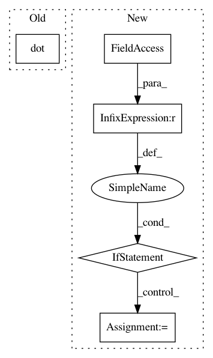

30eadc321c1755eca615a39bb4b8b5fc1e769f70,dipy/reconst/mdki.py,,_wls_fit_mdki,#,288
Before Change
W = np.diag(ng * msignal ** 2)
// WLS solution
BTW = np.dot(design_matrix.T, W)
inv_BT_W_B = np.linalg.pinv(np.dot(BTW, design_matrix))
invBTWB_BTW = np.dot(inv_BT_W_B, BTW)
params = np.dot(invBTWB_BTW, np.log(msignal))
After Change
Meeting of the ISMRM; Honolulu. April 22-28
// Check ng
if ng is None:
ms = "The array ng containing the number of gradient directions used"
ms += " to compute the mean signal for each unique b-value is"
ms += " required. Please set this function parameter propertly"
raise ValueError(ms)
// Define weights as diag(ng * msignal ** 2)
w = ng * msignal ** 2
// BTW = (Bw).T, where w are diag of W
BTW = (w[..., None] * design_matrix).T
In pattern: SUPERPATTERN
Frequency: 3
Non-data size: 5
Instances
Project Name: nipy/dipy
Commit Name: 30eadc321c1755eca615a39bb4b8b5fc1e769f70
Time: 2019-03-10
Author: rafaelnh21@gmail.com
File Name: dipy/reconst/mdki.py
Class Name:
Method Name: _wls_fit_mdki
Project Name: pymanopt/pymanopt
Commit Name: 2cc626a07d32fcc34d9dd850f00f5351cdba7914
Time: 2017-09-29
Author: lars.tingelstad@ntnu.no
File Name: pymanopt/manifolds/rotations.py
Class Name: Rotations
Method Name: retr
Project Name: pymanopt/pymanopt
Commit Name: 2cc626a07d32fcc34d9dd850f00f5351cdba7914
Time: 2017-09-29
Author: lars.tingelstad@ntnu.no
File Name: pymanopt/manifolds/rotations.py
Class Name: Rotations
Method Name: retr2